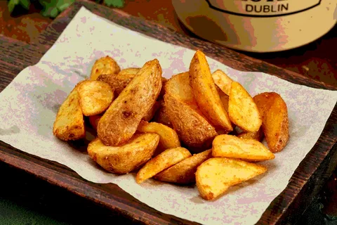
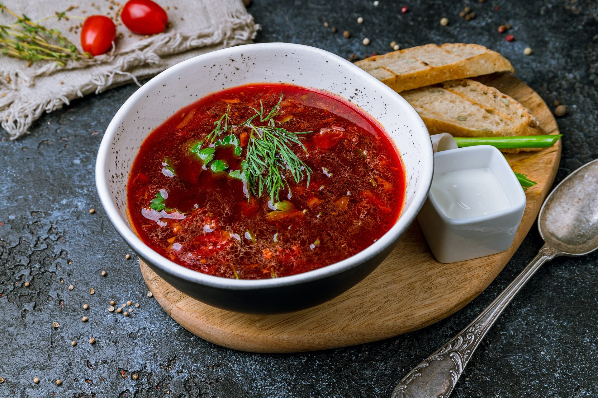
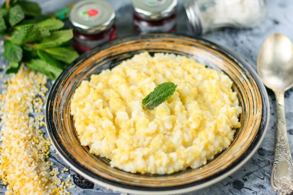
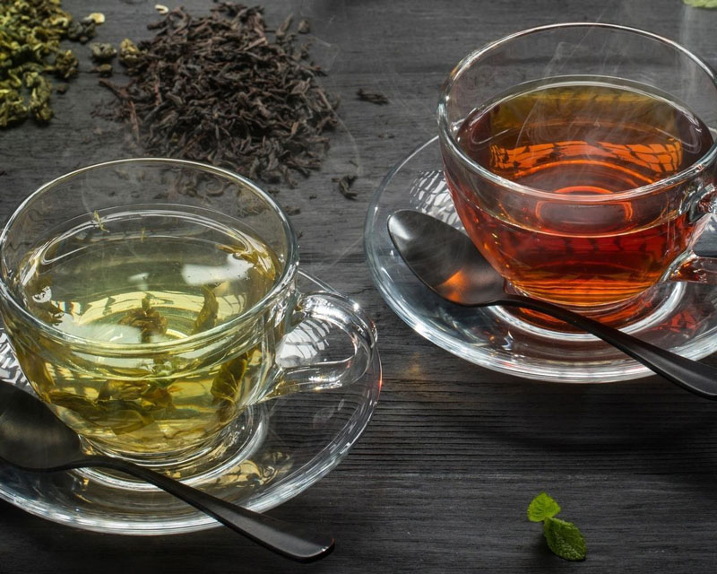
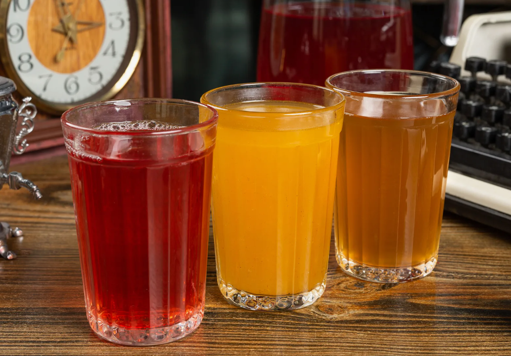
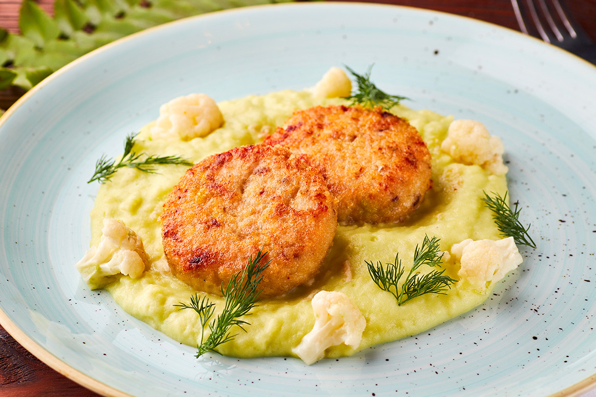
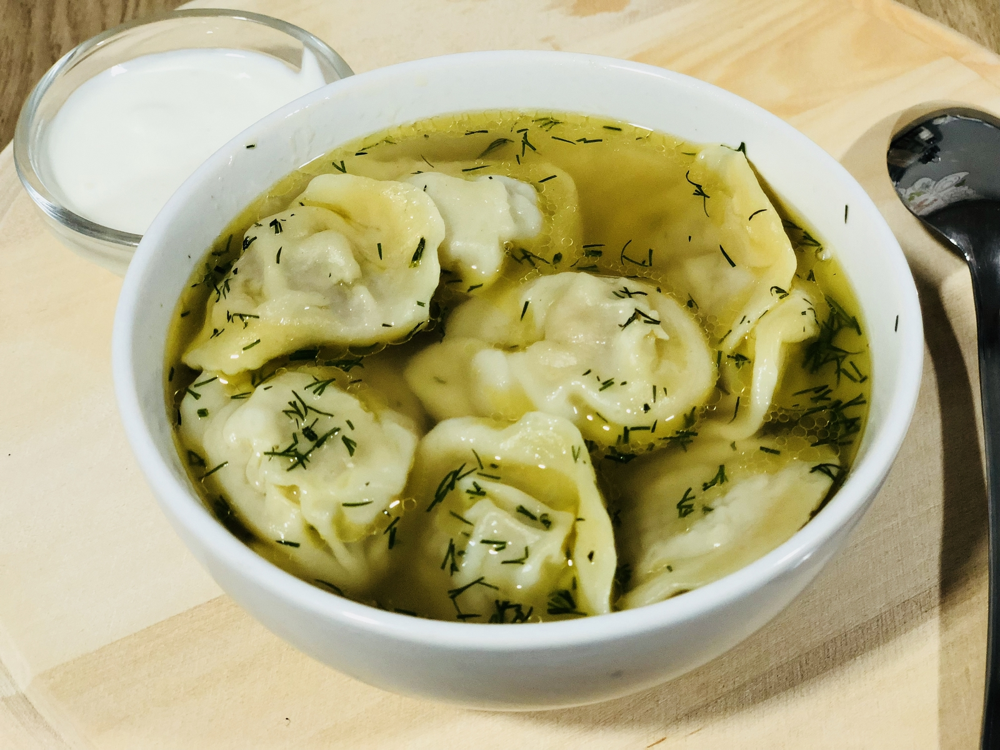
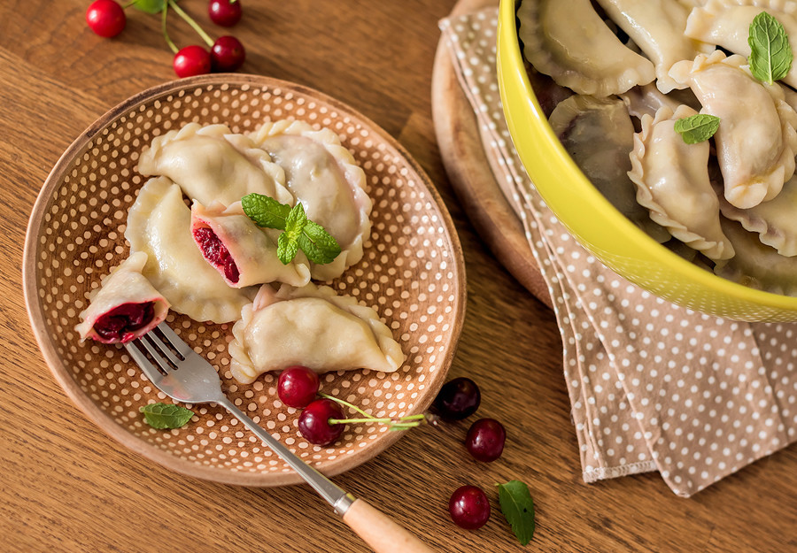

ООО "Русский дар" 
Подаваемые блюда.
Вернутся на главную страницу
Ресторан "Народная изба" подает эти блюда посетителям:
- Картошка по-деревенски. Картошка, нарезанная вдоль и пожаренная во фритюре. Подается 10 шт.

- Самса. Тесто слоенное и начинка из курицы. Подается 1 шт.

- Борщ. Суп со свеклой, капустой и картошкой, подданный со сметаной.

- Драники. Картошка на терке пожаренная на сковороде, поданная со сметанной. Подается 5 шт.
- Каша "Дружба". Каша из пшена и риса, подданный на тарелке.

- Чай. Делается черный и зеленный чай. Подается в крушке с двумя кубиками сахара по вкусу.

- Компот. Делается из вишни, яблок и абрикоса. Подается в стаканах

- Котлеты с пюре. Две котлеты из говядины, подданный с пюре на тарелке.

- Пельмени с бульоном. Пельмени с говядиной в количестве 9 штук за порцию, подданный в говяжем бульоне.

- Вареники. Вареники с творогом и вишней, подданный на тарелке с маслом в количестве 5 штук.
